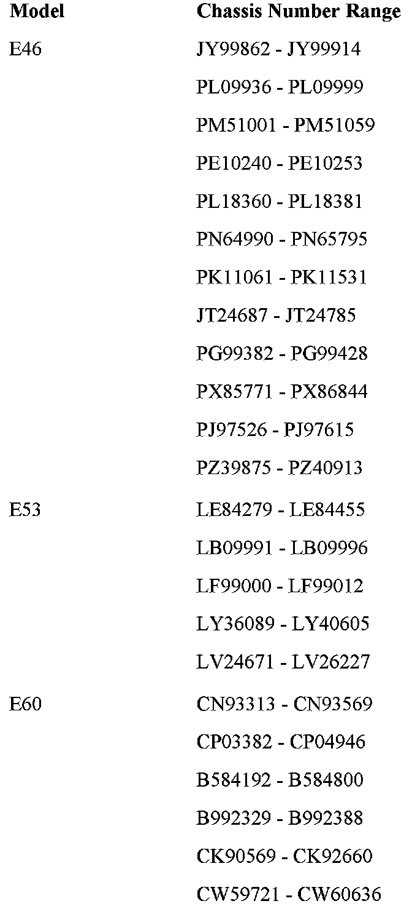

Campaign - Reactivation of Telematics Control Unit (TCU): Overview
SI B84 14 06Phone, Navigation Systems
May 2007
Technical Service
This Service Information bulletin supersedes S.I. B84 14 06 dated December 2006.
PERFORM THE PROCEDURE OUTLINED IN THIS SERVICE INFORMATION ON ALL AFFECTED VEHICLES THE NEXT TIME THEY ARE IN THE SHOP FOR MAINTENANCE OR REPAIRS AND PRIOR TO RETAIL DELIVERY.
[NEW] designates changes to this revision
SUBJECT
Service Action: Reactivation of Telematics Control Unit (TCU)
MODEL
E46 (3 Series)
E53 (X5)
E60, E61 (5 Series)
E63, E64 (6 Series)
E65, E66 (7 Series)
E83 (X3)
[NEW] E85 (Z4)
E90, E91 (3 Series)
SITUATION
Certain vehicles have had the TCU Mobile Identification Number (MIN) and Mobile Device Number (MDN) inadvertently deactivated. This may cause the manual and automatic emergency call and roadside call (BMW Assisttrade;), not to function. This Service Action reactivates the TCU by assigning a new MIN and MDN to the TCU.
Copies of the customer notification letter and Q&A are shown in this bulletin.
To minimize customer's inconvenience caused by this service action, pick-up (and deliver after repair) the affected vehicle from customer's home or provide appropriate alternative transportation.
Customers will be impressed when you return their cars cleaned inside and out and with a full tank of gas. Reimbursement information for the vehicle fueling and valet costs may be found in the Warranty portion of this bulletin.
AFFECTED VEHICLES
This Service Action involves 3 Series, 5 Series, 6 Series, 7 Series, X3, X5 and Z4 vehicles with BMW Assisttrade; produced from 2/20/2006 to 4/24/2006.
In order to determine if a specific vehicle is affected by this Service Action, it will be necessary to utilize the "Service Menu" of the DCS (Dealer Communication System) or Key Reader. Based on the response of the system, either proceed with the corrective action or take no further action.


The Chassis Number Ranges shown are only for informational purposes and are not to be considered as the only deciding factor.
LABEL INSTRUCTIONS
This Service Action has been assigned code number 468. After the vehicle has been checked, and corrected if necessary, obtain a label (SD 92-295) and:
a. Emboss your BMW dealer warranty number in the middle of the label (1);
b. Punch out code number 468 printed on the label (2) and,
c. Affix the label to the B pillar as shown.
If the vehicle already has a label from a previous Service Action/Recall Campaign, affix the new label next to the old one. Do not affix one label on top of another one because a number from an underlying label could appear in the punched-out hole of the new label.
WARRANTY INFORMATION
[NEW] Covered under the terms of the BMW New Vehicle Limited Warranty.

Disclaimer